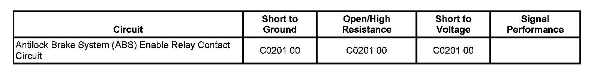

Under 8600 GVW
DTC C0201 (Under 8600 GVW)
DTC Descriptor
DTC C0201 00
Antilock Brake System (ABS) Enable Relay Contact Circuit
Diagnostic Fault Information
Important: Perform the Diagnostic System Check - Vehicle prior to using this diagnostic procedure. Initial Inspection and Diagnostic Overview

Circuit/System Description
The solenoid relay, located within the electronic brake control module (EBCM), supplies battery voltage to all of the valve solenoids.
Conditions for Running the DTC
^ Ignition voltage is greater than 9.5 volts.
^ The solenoid relay is commanded ON.
Conditions for Setting the DTC
One or more of the following conditions exists:
^ The EBCM detects an open in the battery positive voltage circuit to the solenoid valve relay.
^ The EBCM detects a stuck open solenoid valve relay or an open circuit between the solenoid valve relay and solenoid valves.
Action Taken When the DTC Sets
^ The EBCM disables the antilock brake system (ABS)/traction control system (TCS)/dynamic rear proportion (DRP) for the duration of the ignition cycle.
^ The ABS indicator turns ON.
^ The Traction Control indicator turns ON.
^ The red brake warning indicator turns ON.
^ The driver information center (DIC) displays the SERVICE BRAKE SYSTEM/TRACTION SYSTEM message.
Conditions for Clearing the DTC
^ The condition for setting the DTC is no longer present.
^ The EBCM automatically clears the history DTC when a current DTC is not detected in 100 consecutive drive cycles.
Reference Information
Schematic Reference
Antilock Brake System Schematics
Connector End View Reference
Antilock Brake System Connector End Views
Description and Operation
ABS Description and Operation (Under 8600 GVW ) ABS Description and Operation (Equal to or Over 8600 GVW)
Electrical Information Reference
^ Circuit Testing
^ Connector Repairs
^ Testing for Intermittent Conditions and Poor Connections
^ Wiring Repairs
Scan Tool Reference
Scan Tool Data List
Circuit/System Verification
With scan tool installed, clear the DTCs then drive the vehicle in a straight line at a speed greater than 20 km/h (13 mph). If the DTC did not set as a current DTC see diagnostic aids.
Circuit/System Testing
1. Test for an open or a short to ground in the battery positive voltage circuit to the EBCM. Verify no open or a short to ground is found.
2. Test the EBCM ground circuit, an open or high resistance.
^ If an open or a short to ground is found, repair the circuit.
3. Replace the EBCM assembly.
Repair Instructions
Important: Perform the Diagnostic Repair Verification after completing the diagnostic procedure. Verification Tests
Control Module References for EBCM replacement, setup, and programming.